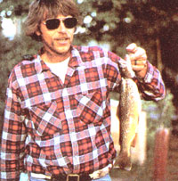

Only a few inexpensive items are needed to fabricate a practical tackle box belt, and many of them may already be lying around your home somewhere just waiting to be put to good use. The main ingredient, of course, is a belt. Preferably a cloth belt. (You could use leather, but it's mighty hard to sew through.) You'll also need a one-piece plastic soap dish (the kind with a hinged lid), about 18 inches of inch-wide elastic, a 12" length of rawhide thong or strong cord, a scrap of sheepskin (optional), a stout sewing needle, some sturdy thread, and several plastic 35mm film canisters. (If you don't use 35mm film, ask your friends or the clerk at your local photo shop to save a few containers for you.)
Plan before you sew. Consider which items you want to carry and where they should be placed for comfort and accessibility. (Naturally, if you're making the belt for someone else, you should consult with that person about such things.) Hooks, sinkers, swivels, and small lures all fit nicely in the little cans. Flies can also be kept in the canisters-or hooked onto a scrap of sheepskin.
Sew the elastic onto the belt in loops sized to hold the film cans snugly. Similar loops can be created to hold your favorite fishing tools. (My husband keeps his hook disgorger handy this way.) Worms, crawfish, grasshoppers, and other live baits are stored in the plastic soap dish: Punch air holes in the lid with a red-hot ice pick, and suspend the dish from the belt by the thong or cord.
Many baits, such as salmon eggs and cheese balls, come in small jars. If you have a favorite, make an elastic loop for that particular jar. [EDITOR'S NOTE: One of MOM's staffers swears by Poutzke's Balls o' Fire.]
In general, use your imagination to tailor a tackle box belt that's just right for you-or yours.
|
 |
|
|